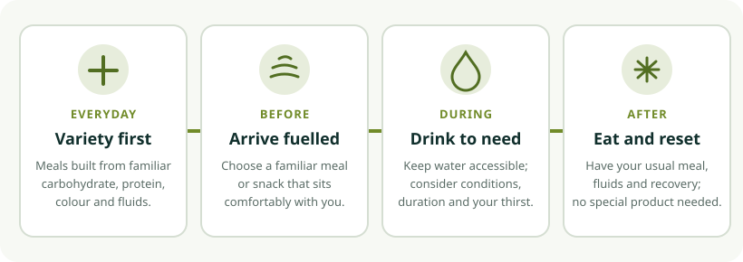

01 / Start with daily habits
A flexible base beats a “perfect” sports diet
Eat a varied mix of familiar foods across the day. Include carbohydrate-rich foods for everyday energy; protein-containing foods; fruit and vegetables; and sources of fats and other nutrients. Adapt the foods to your culture, budget, preferences, allergies, and access.
Carbohydrate foods
Rice, bread, oats, noodles, potatoes, fruit, beans, and other grains can help supply energy for movement and practice.
Protein foods
Beans, lentils, tofu, dairy or suitable alternatives, eggs, fish, and meat are examples. Include choices that work for your diet.
Colour and variety
Fruit and vegetables add fibre and a range of nutrients. Fresh, frozen, or suitable canned foods can all be useful.
Fluids and fats
Drink regularly according to your needs. Nuts, seeds, avocado, and plant oils are examples of foods with unsaturated fats.

02 / Before practice
Arrive comfortable, not overfull or under-fuelled
Plan your usual meal or snack around your schedule and personal digestion. Some people prefer a meal a few hours before playing; others do better with a smaller, familiar snack closer to a session. There is no single timing or menu that suits everyone.
Meal before an evening session
A familiar rice, potato, bread, or pasta meal with vegetables and a protein food, adjusted to your appetite and timing.
Small snack if needed
A banana, toast, cereal, yoghurt, or another familiar option you already tolerate. A snack is optional if you feel comfortable without one.
- Try familiar foods before a normal practice rather than testing a new product on match day.
- If a meal feels heavy before play, adjust the size or timing next time instead of forcing it.
- Bring a snack if you will be away from meals for a long tournament day.
- Do not intentionally restrict food or water to change body size or weight for badminton.
03 / During the session
Hydrate to the conditions and the length of play
Keep a drink accessible and take comfortable opportunities to drink. Needs vary with heat, humidity, session duration, sweat rate, access to breaks, and individual health. Do not force large amounts of fluid or follow another player’s exact intake as a target.
Short, ordinary session
Water and normal meals are often practical. Drink according to thirst and the conditions where you are playing.
Long or hot tournament day
Plan access to drinks and familiar snacks. An appropriately chosen sports drink or food may be useful for some prolonged situations, but it is not needed for every session.
If you have a medical condition affecting fluids, a history of heat illness, or special dietary needs, ask your clinician or sports dietitian for an individual plan.
04 / Between sessions
Return to normal meals and recovery
After practice, eat your usual meal or snack when it fits your day and drink to replace what you need. A meal with carbohydrate-containing foods, a protein source, and fluids is one simple pattern. Ordinary foods can do the job; expensive recovery products are not a requirement.
For example, rice with beans or tofu, vegetables and fruit; potatoes with eggs or lentils; or a familiar sandwich with yoghurt or a suitable alternative are all adaptable starting points. Adjust portions to your appetite, culture, needs, and access to food.
Sleep, regular meals, appropriate rest, and a training load you can recover from matter too. See the example week plans and recovery guidance.
05 / Pack for play
A simple tournament-day plan
- Before leaving: Eat a familiar meal that suits your schedule, pack water, and check event timings and venue rules.
- Between matches: Take the rest available, drink comfortably, and choose a familiar snack if you are hungry or have a long wait.
- After play: Cool down at a comfortable pace, rehydrate, eat your normal meal, and note what helped you feel prepared.
- For the next event: Change one practical choice at a time based on your experience rather than copying an elite athlete’s plan.
06 / Safety first
Supplements are not a shortcut
Supplements can be unnecessary, ineffective, unsafe for some people, or contaminated with substances prohibited in sport. A label, influencer, or “natural” claim does not prove safety or benefit. Athletes are responsible for substances in their bodies under anti-doping rules.
- Food, sleep, coaching, and consistent training are the foundation—not a supplement stack.
- Never use a product to self-treat a health problem or replace a varied diet without qualified advice.
- Before any supplement, discuss the need, safety, and contamination risk with a doctor or qualified sports dietitian.
- Competitive athletes must check the current anti-doping rules and recognize that no testing scheme removes all risk.
- Young players should not start supplements or restrictive diets based on a website or peer advice.
07 / Individual needs
Get personal advice when it matters
This general guide is not an individual meal prescription. A registered dietitian or qualified sports dietitian can adapt food and hydration to age, health, culture, allergies, vegetarian or vegan eating, training, and competition needs. For children and teens, involve a parent or guardian and a clinician with appropriate pediatric experience.
Continue with the equipment guide, the training library, and the development pathway.